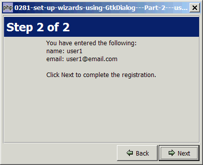

Problem
This example gives the same result as How to set up wizards using GtkDialog - Part 1?
The only difference is that it's re-written using OOP and classes.
I came out with a Wizard class that are almost similar to the GtkAssistant.
I also encapsulated each page with a Wizard_Page class. Take a look at the example below. You will see how this class helps to make the code cleaner and easier to maintain. All the signal handlers and processing functions can be nicely encapsulated into this class.
You will find that it's now much easier to set up wizards, with the ability to set each page's contents on-the-fly (using the prepare "signal"), and carry out appropriate actions based on user's inputs (using the apply "signal") as shown below:

Solution
If you're comfortable with PHP's OOP, you should find the following code straightforward and self-explanatory.
If you're not too familiar with OOP, don't worry. Just copy the two classes and use them. The way to use the class Wizard is almost similar to using a GtkAssistant.
I wrote this example to show you what many people have already discovered: "The fun really begins when you know how to create your own widgets in PHP-GTK!" From the basic widgets such as GtkDialog, GtkButtons and GtkBoxes, you can mix-and-match these widgets to create your own powerful widgets. If you're keen to explore more about this, you might want to check out the ebook PHP-GTK2 Demystified.
Sample Code
| 1 2 3 6 7 10 14 15 19 20 21 22 25 28 29 30 31 32 35 36 37 38 39 41 42 46 48 49 50 51 52 53 54 55 56 57 58 60 61 62 63 64 65 69 70 71 72 76 77 78 79 82 83 84 85 86 87 88 89 91 92 93 94 95 96 97 98 103 104 110 111 113 114 115 117 118 119 121 122 128 129 137 140 141 142 143 144 145 146 147 149 150 151 152 153 154 155 156 157 158 164 165 166 167 168 169 170 171 172 173 174 175 176 177 178 179 180 181 182 183 184 185 186 190 191 192 193 194 195 196 197 199 200 201 202 204 206 207 208 209 210 211 212 213 214 215 216 217 218 219 220 221 223 224 225 226 228 229 230 231 232 233 234 235 236 238 239 241 242 243 244 245 246 247 248 249 250 251 252 253 254 255 256 258 259 260 261 262 263 264 266 267 268 270 271 272 273 274 275 276 277 278 279 280 281 282 283 288 289 290 291 292 293 294 295 296 297 298 299 300 301 302 303 304 305 306 307 308 310 311 312 313 314 316 317 318 319 320 321 322 323 324 325 326 328 329 330 331 332 333 334 335 336 337 338 339 340 341 342 343 344 345 346 347 348 349 350 351 352 353 354 355 356 358 360 361 362 363 364 365 366 367 369 370 371 373 374 375 376 377 378 379 380 381 382 383 384 385 386 387 389 390 393 394 396 398 400 401 402 403 404 405 406 407 408 409 410 411 412 414 415 418 419 420 421 422 423 425 426 427 428 429 430 431 432 433 434 435 436 437 438 439 440 442 443 444 445 446 447 448 449 450 451 452 453 454 455 456 457 458 459 460 461 462 463 464 465 466 467 468 469 470 471 472 473 474 | <?php $wizard = new Wizard(); // note 1 $wizard->set_title($argv[0]); $wizard->set_size_request(400,300); //intro $page = new Wizard_Page('Create New Account', $wizard->ASSISTANT_PAGE_INTRO); // note 2 $page->pack_start(new GtkLabel( "This wizard will help you create a new account.\n\n". "Creating a new account is just a two-step process.\n\n". "Click the Next button to start getting a free email account.")); $wizard->append_page($page); // note 3 //Step 1 class Page1 extends Wizard_Page { // note 4 public function on_prepare($page_index, $param=array()) { $name_entry = $param[0]; $name_entry->grab_focus(); } public function on_apply($page_index, $param=array()) { } public function on_keypress($widget, $event, $name, $email) { $name = trim($name->get_text()); $email = trim($email->get_text()); $this->wizard->input_name = $name; $this->wizard->input_email = $email; if ($name!='' && $email!='') { $this->set_page_complete(1); // note 5 $this->wizard->update_buttons(); } elseif ($name=='' || $email=='') { $this->set_page_complete(0); $this->wizard->update_buttons(); // note 6 } return false; } } $page1 = new Page1('Step 1 of 2', $wizard->ASSISTANT_PAGE_PROGRESS); $page1->pack_start(new GtkLabel("Please enter your name and email, \n". "and click Next")); $name_entry = setup_textentry($page1, 'Name: '); $email_entry = setup_textentry($page1, 'Email: '); $name_entry->connect('key-press-event', array(&$page1, 'on_keypress'), $name_entry, $email_entry); $email_entry->connect('key-press-event', array(&$page1, 'on_keypress'), $name_entry, $email_entry); $wizard->append_page($page1); $wizard->set_prepare_signal(array($page1, 'on_prepare'), $page1, array($name_entry, $email_entry)); $wizard->set_apply_signal(array($page1, 'on_apply'), $page1); //Step 2 class Page2 extends Wizard_Page { public function on_prepare($page_index, $param=array()) { // note 7 $name = $this->wizard->input_name; $email = $this->wizard->input_email; $content = $param[0]; $content->set_text("You have entered the following:\n". "name: $name\n". "email: $email\n\n". "Click Next to complete the registration."); } } $page2 = new Page2('Step 2 of 2', $wizard->ASSISTANT_PAGE_CONTENT); $page2_text = new GtkLabel(); $page2->pack_start($page2_text); $wizard->append_page($page2); $wizard->set_prepare_signal(array($page2, 'on_prepare'), $page2, array($page2_text)); //Done $page3 = new Wizard_Page('Done', $wizard->ASSISTANT_PAGE_SUMMARY); $page3_text = new GtkLabel(); $page3->pack_start($page3_text); $wizard->append_page($page3); $wizard->set_prepare_signal('on_prepare', $page3, array($page3_text)); // note 8 // start with the first page // all set! let's go! $wizard->show_all(); $wizard->run(); // note 10 $wizard->destroy(); // note 10 function on_prepare($page, $param) { // note 9 $page_index = $page->page_index; if ($page_index==3) { $content = $param[0]; $name = $page->wizard->input_name; $email = $page->wizard->input_email; $content->set_text("Congratulations, $name!\n\n". "Your new account has been successfully created.\n\n". "A confirmation email has been sent to: $email"); } } class Wizard extends GtkDialog { protected $top_area; // the area above the buttons protected $title_ptr; // the title protected $page_vbox; // the content area for each page protected $page = array(); // hold each page of type Wizard_Page protected $total_pages = 0; // total number of pages protected $current_page = -1; // current_page; protected $prepare_callback_fn = array(); // callback fn for prepare protected $apply_callback_fn = array(); // callback fn for apply // user-defined parameters for prepare callback fn protected $prepare_param = array(); // user-defined parameters for apply callback fn protected $apply_param = array(); public function __construct() { parent::__construct('Alert', null, Gtk::DIALOG_MODAL); $this->setup_top_area(); $this->setup_buttons(); $this->set_has_separator(false); $this->action_area->set_size_request(-1, 1); } protected function setup_top_area() { // create a frame with blue border $frame = new GtkFrame(); $frame->modify_bg(Gtk::STATE_NORMAL, GdkColor::parse("#08216B")); $frame->modify_fg(Gtk::STATE_NORMAL, GdkColor::parse("#08216B")); $frame->modify_base(Gtk::STATE_NORMAL, GdkColor::parse("#08216B")); $this->vbox->pack_start($frame); // create the title box with blue background $eventbox = new GtkEventBox(); $eventbox->modify_bg(Gtk::STATE_NORMAL, GdkColor::parse("#08216B")); $this->title_ptr = new GtkLabel(); $this->title_ptr->modify_fg(Gtk::STATE_NORMAL, GdkColor::parse("#ffffff")); $this->title_ptr->modify_font(new PangoFontDescription("Bold 14")); $this->title_ptr->set_size_request(-1, 40); $alignment = new GtkAlignment(0, 0.5, 0.04, 0.04); $alignment->add($this->title_ptr); $eventbox->add($alignment); $this->top_area = new GtkVBox(); $frame->add($this->top_area); $this->top_area->pack_start($eventbox, 0); // create the content area for each page $this->page_vbox = new GtkVBox(); $this->top_area->pack_start($this->page_vbox); $this->top_area->pack_start(new GtkLabel()); $this->ASSISTANT_PAGE_INTRO = 0; $this->ASSISTANT_PAGE_CONTENT = 1; $this->ASSISTANT_PAGE_PROGRESS = 2; $this->ASSISTANT_PAGE_SUMMARY = 3; } protected function setup_buttons() { // set up the buttons $hbox = new GtkHBox(); $hbox->pack_start(new GtkLabel()); $this->button_back = $this->create_button( $hbox, Gtk::STOCK_GO_BACK, 'Back'); $this->button_next = $this->create_button( $hbox, Gtk::STOCK_GO_FORWARD, 'Next'); $this->button_close = $this->create_button( $hbox, Gtk::STOCK_CLOSE, 'Close'); $this->vbox->pack_start(new GtkVBox(), 0); $this->vbox->pack_start($hbox, 0); } public function append_page($new_page) { $this->page[$this->total_pages] = $new_page; $new_page->page_index = $this->total_pages; ++$this->total_pages; $new_page->wizard = $this; $new_page->show_all(); if ($this->current_page<0) { $this->current_page = 0; $this->page_vbox->pack_start($new_page, 1); } } public function get_current_page() { return $this->current_page; } public function set_page_complete($status) { } public function show_all() { $this->update_top_area(); parent::show_all(); $this->update_buttons(); } protected function update_top_area() { $page = $this->page[$this->current_page]; $title = $page->title; $this->title_ptr->set_text($title); } public function update_buttons() { $page_type = $this->page[$this->current_page]->page_type; $complete = $this->page[$this->current_page]->get_page_complete(); switch($page_type) { case $this->ASSISTANT_PAGE_INTRO: $this->button_back->hide(); $this->button_next->show(); $this->button_next->set_sensitive(1); $this->button_close->hide(); $this->button_next->grab_focus(); break; case $this->ASSISTANT_PAGE_CONTENT: $this->button_back->show(); $this->button_next->show(); $this->button_next->set_sensitive(1); $this->button_close->hide(); $this->button_next->grab_focus(); break; case $this->ASSISTANT_PAGE_PROGRESS: $this->button_back->show(); $this->button_next->show(); if ($complete) { $this->button_next->set_sensitive(1); } else { $this->button_next->set_sensitive(0); } $this->button_close->hide(); break; case $this->ASSISTANT_PAGE_SUMMARY: $this->button_back->hide(); $this->button_next->hide(); $this->button_close->show(); $this->button_close->grab_focus(); break; } } protected function create_button($container, $stock_id, $label='', $width=82, $height=32) { if ($label=='') { return GtkButton::new_from_stock($stock_id); } $button = new GtkButton(); $hbox = new GtkHBox(); $button->add($hbox); $hbox->pack_start(new GtkLabel()); $img=GtkImage::new_from_stock($stock_id, Gtk::ICON_SIZE_SMALL_TOOLBAR); $hbox->pack_start($img, 0, 0); $hbox->pack_start(new GtkLabel(), 0, 0); $hbox->pack_start(new GtkLabel($label), 0, 0); $button->connect('clicked', array($this, 'on_button'), $label); $button->set_size_request($width, $height); $container->pack_start($button, 0); $hbox->pack_start(new GtkLabel()); return $button; } function on_button($button, $label) { if ($label=='Close') { $this->destroy(); return; } $old_page = $this->page[$this->current_page]; $this->page_vbox->remove($old_page); $old_page_index = $old_page->page_index; if (isset($this->apply_callback_fn[$old_page_index])) { $callback_fn = $this->apply_callback_fn[$old_page_index]; $param = $this->apply_param[$old_page_index]; if (is_array($callback_fn)) { $callback_fn[0] -> $callback_fn[1]($old_page_index, $param); } else { $callback_fn($old_page, $param); } } if ($label=='Next') { if ($this->current_page<($this->total_pages-1)) ++$this->current_page; } elseif ($label=='Back') { if ($this->current_page>0) --$this->current_page; } $this->page_vbox->pack_start($this->page[$this->current_page], 0); // note 3 if (isset($this->prepare_callback_fn[$this->current_page])) { $callback_fn = $this->prepare_callback_fn[$this->current_page]; $param = $this->prepare_param[$this->current_page]; if (is_array($callback_fn)) { $callback_fn[0] -> $callback_fn[1]($this->current_page, $param); } else { $callback_fn($this->page[$this->current_page], $param); } } $this->update_top_area(); $this->page[$this->current_page]->show_all(); $this->update_buttons(); } function set_prepare_signal($callback_fn, $page, $param=array()) { $page_index = $page->page_index; if ($callback_fn!='') { $this->prepare_callback_fn[$page_index] = $callback_fn; $this->prepare_param[$page_index] = $param; } } function set_apply_signal($callback_fn, $page, $param=array()) { $page_index = $page->page_index; if ($callback_fn!='') $this->apply_callback_fn[$page_index] = $callback_fn; $this->apply_param[$page_index] = $param; } } class Wizard_Page extends GtkVBox { public $title; // title of the page public $page_type; // page type protected $complete; // if complete, Next button will be activated public $wizard; // the parent wizard holding all the pages public $page_index; // index of the page (int val) public function __construct($title='', $page_type='') { parent::__construct(); if ($title!='') $this->title = $title; if (strlen($page_type)>0) $this->page_type = $page_type; } public function set_page_title($title) { $this->title = $title; } public function set_page_type($page_type) { $this->page_type = $page_type; } public function set_page_complete($bool) { $this->complete = $bool; } public function get_page_complete() { return $this->complete; } } function setup_textentry($container, $label) { $hbox = new GtkHBox(); $hbox->pack_start(new GtkLabel($label), 0); $entry = new GtkEntry(); $hbox->pack_start($entry, 0); $container->pack_start($hbox, 0); return $entry; } ?> |
Output
As shown above.Explanation
Would suggest that you print out a copy of the sample code from the articles How to set up wizards using GtkDialog - Part 1? and How to set up wizards using GtkAssistant - Part 2 - respond to forward button?, and compare that with the sample code above. Both produce the same output. But the sample code above uses the object-oriented approach.
What's new here:
- Note that the class Wizard is an extension of GtkDialog. So use it like a GtkDialog.
- The class Wizard_Page is an extension of GtkVBox. This is one difference between using the GtkAssistant and using the class Wizard. In GtkAssistant, you have to explicitly create a GtkVBox and append that vbox to the GtkAssistant. When you instantiate a new Wizard_Page using new(), the object itself is a vbox. So you do not need to explicitly create another vbox.
- Append the page to the wizard.
- Notice here we extend the class Wizard_Page to form another new class called Page1. The main purpose is to encapsulate all the signal handlers that are relevant only to Page 1 into this class.
- This is one area of improvement over the previous example. When you set the page type to "ASSISTANT_PAGE_PROGRESS", by default, the Next button will be deactivated. For this Page 1, only when the user has filled in both the name and email, then we
set_page_complete()to 1. This will activate the Next button. - Suppose the user filled in both the name and email, then delete both of them again. We need to deactivate the Next button. Hence this line.
- Notice how from Page 2 we can retrieve the values of $name and $email from Page 1. This is done in the prepare "signal handler", which is called before the page is displayed. Notice that I put the "signal handler" in quotes because this and the apply "signal handler" are not real signal handlers. They are manually called from within the method Wizard::on_button(). The concept is exactly the same as the prepare and apply signal in GtkAssistant. VIP Note: For these two "signal handlers", if you need to pass any parameters along, don't forget to pass them in as arrays. They accept only one parameter. So if you have one, pass in as array($var1). If you have four, pass in as array($var1, $var2, $var3, $var4). Take a look at the example, and you will know what I mean.
- If you're not familiar with OOP, don't worry. This one shows you how to set up the prepare and apply signal without using any OOP. You specify the callback function as the first parameter. You can see the callback function definition in Note 9.
- This is a sample of the prepare callback function using non-OOP approach.
- The Wizard is an extension of GtkDialog. So run it and destroy it like a GtkDialog!
Read more...